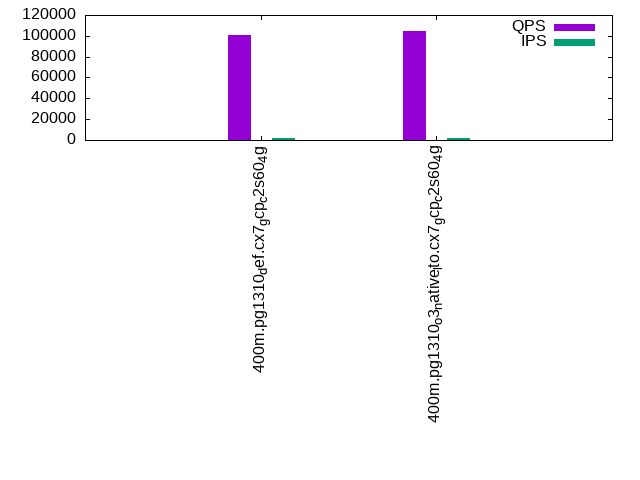
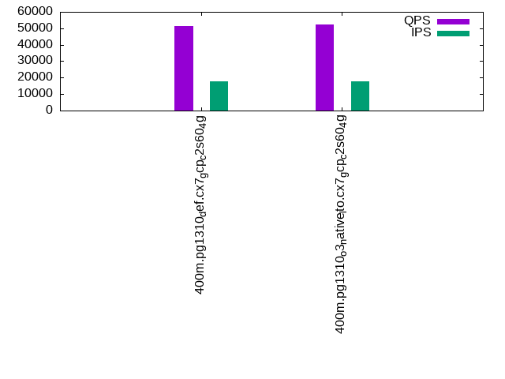

This is a report for the insert benchmark with 400M docs and 20 client(s). It is generated by scripts (bash, awk, sed) and Tufte might not be impressed. An overview of the insert benchmark is here and a short update is here. Below, by DBMS, I mean DBMS+version.config. An example is my8020.c10b40 where my means MySQL, 8020 is version 8.0.20 and c10b40 is the name for the configuration file.
The test server is a c2-standard-60 from GCP with 30 cores, hyperthreading disabled, 240G RAM and 3T from XFS and SW RAID 0 striped over 8 local NVMe drives. The benchmark was run with 20 clients and there were 1 or 2 connections per client (1 for queries, 1 for inserts). The benchmark loads 400M rows without secondary indexes, creates secondary indexes, loads another 400M rows then does 3 read+write tests for one hour each that do queries as fast as possible with 100, 500 and then 1000 writes/second/client concurrent with the queries. Each read-write test runs for 1800 seconds. The test was configured to use a table per client. The database fits in the OS page cache but not the DBMS buffer pool. Clients and the DBMS share one server. The per-database configs are in the per-database subdirectories here.
The tested DBMS are:
The numbers are inserts/s for l.i0 and l.i1, indexed docs (or rows) /s for l.x and queries/s for q*.2. The values are the average rate over the entire test for inserts (IPS) and queries (QPS). The range of values for IPS and QPS is split into 3 parts: bottom 25%, middle 50%, top 25%. Values in the bottom 25% have a red background, values in the top 25% have a green background and values in the middle have no color. A gray background is used for values that can be ignored because the DBMS did not sustain the target insert rate. Red backgrounds are not used when the minimum value is within 80% of the max value.
| dbms | l.i0 | l.x | l.i1 | q100.1 | q500.1 | q1000.1 |
|---|---|---|---|---|---|---|
| 400m.pg1310_def.cx7_gcp_c2s60_4g | 1393728 | 1932850 | 22990 | 100937 | 75843 | 51228 |
| 400m.pg1310_o3_native_lto.cx7_gcp_c2s60_4g | 1398601 | 1951707 | 23136 | 104165 | 77297 | 52192 |
This lists the average rate of inserts/s for the tests that do inserts concurrent with queries. For such tests the query rate is listed in the table above. The read+write tests are setup so that the insert rate should match the target rate every second. Cells that are not at least 95% of the target have a red background to indicate a failure to satisfy the target.
| dbms | q100.1 | q500.1 | q1000.1 |
|---|---|---|---|
| pg1310_def.cx7_gcp_c2s60_4g | 1976 | 9890 | 17937 |
| pg1310_o3_native_lto.cx7_gcp_c2s60_4g | 1976 | 9885 | 17973 |
| target | 2000 | 10000 | 20000 |
l.i0: load without secondary indexes. Graphs for performance per 1-second interval are here.
Average throughput:
Insert response time histogram: each cell has the percentage of responses that take <= the time in the header and max is the max response time in seconds. For the max column values in the top 25% of the range have a red background and in the bottom 25% of the range have a green background. The red background is not used when the min value is within 80% of the max value.
| dbms | 256us | 1ms | 4ms | 16ms | 64ms | 256ms | 1s | 4s | 16s | gt | max |
|---|---|---|---|---|---|---|---|---|---|---|---|
| pg1310_def.cx7_gcp_c2s60_4g | 64.146 | 34.687 | 1.082 | 0.040 | 0.031 | 0.012 | 0.001 | 1.283 | |||
| pg1310_o3_native_lto.cx7_gcp_c2s60_4g | 61.210 | 37.779 | 0.929 | 0.045 | 0.023 | 0.014 | 0.761 |
Performance metrics for the DBMS listed above. Some are normalized by throughput, others are not. Legend for results is here.
ips qps rps rmbps wps wmbps rpq rkbpq wpi wkbpi csps cpups cspq cpupq dbgb1 dbgb2 rss maxop p50 p99 tag 1393728 0 553 11.6 9785.6 590.8 0.000 0.009 0.007 0.434 199408 59.8 0.143 13 38.3 103.2 NA 1.283 79913 9489 400m.pg1310_def.cx7_gcp_c2s60_4g 1398601 0 610 10.5 9850.6 592.3 0.000 0.008 0.007 0.434 232732 58.6 0.166 13 38.3 103.2 NA 0.761 80013 10089 400m.pg1310_o3_native_lto.cx7_gcp_c2s60_4g
l.x: create secondary indexes.
Average throughput:
Performance metrics for the DBMS listed above. Some are normalized by throughput, others are not. Legend for results is here.
ips qps rps rmbps wps wmbps rpq rkbpq wpi wkbpi csps cpups cspq cpupq dbgb1 dbgb2 rss maxop p50 p99 tag 1932850 0 11403 275.4 6038.4 729.7 0.006 0.146 0.003 0.387 124010 22.0 0.064 3 73.5 176.8 NA 0.262 NA NA 400m.pg1310_def.cx7_gcp_c2s60_4g 1951707 0 10241 254.1 5909.0 749.2 0.005 0.133 0.003 0.393 125351 21.7 0.064 3 73.5 176.6 NA 0.247 NA NA 400m.pg1310_o3_native_lto.cx7_gcp_c2s60_4g
l.i1: continue load after secondary indexes created. Graphs for performance per 1-second interval are here.
Average throughput:
Insert response time histogram: each cell has the percentage of responses that take <= the time in the header and max is the max response time in seconds. For the max column values in the top 25% of the range have a red background and in the bottom 25% of the range have a green background. The red background is not used when the min value is within 80% of the max value.
| dbms | 256us | 1ms | 4ms | 16ms | 64ms | 256ms | 1s | 4s | 16s | gt | max |
|---|---|---|---|---|---|---|---|---|---|---|---|
| pg1310_def.cx7_gcp_c2s60_4g | 0.009 | 88.254 | 11.733 | 0.004 | 0.448 | ||||||
| pg1310_o3_native_lto.cx7_gcp_c2s60_4g | 0.005 | 88.408 | 11.583 | 0.004 | 0.408 |
Performance metrics for the DBMS listed above. Some are normalized by throughput, others are not. Legend for results is here.
ips qps rps rmbps wps wmbps rpq rkbpq wpi wkbpi csps cpups cspq cpupq dbgb1 dbgb2 rss maxop p50 p99 tag 22990 0 70294 727.0 62431.8 603.8 3.058 32.382 2.716 26.895 133359 12.2 5.801 159 163.3 241.7 0.0 0.448 1199 599 400m.pg1310_def.cx7_gcp_c2s60_4g 23136 0 70042 725.7 62796.7 607.2 3.027 32.119 2.714 26.874 134068 11.9 5.795 154 163.3 242.0 0.0 0.408 1199 599 400m.pg1310_o3_native_lto.cx7_gcp_c2s60_4g
q100.1: range queries with 100 insert/s per client. Graphs for performance per 1-second interval are here.
Average throughput:
Query response time histogram: each cell has the percentage of responses that take <= the time in the header and max is the max response time in seconds. For max values in the top 25% of the range have a red background and in the bottom 25% of the range have a green background. The red background is not used when the min value is within 80% of the max value.
| dbms | 256us | 1ms | 4ms | 16ms | 64ms | 256ms | 1s | 4s | 16s | gt | max |
|---|---|---|---|---|---|---|---|---|---|---|---|
| pg1310_def.cx7_gcp_c2s60_4g | 66.694 | 33.053 | 0.247 | 0.005 | nonzero | nonzero | nonzero | 0.498 | |||
| pg1310_o3_native_lto.cx7_gcp_c2s60_4g | 67.809 | 31.951 | 0.234 | 0.006 | nonzero | 0.056 |
Insert response time histogram: each cell has the percentage of responses that take <= the time in the header and max is the max response time in seconds. For max values in the top 25% of the range have a red background and in the bottom 25% of the range have a green background. The red background is not used when the min value is within 80% of the max value.
| dbms | 256us | 1ms | 4ms | 16ms | 64ms | 256ms | 1s | 4s | 16s | gt | max |
|---|---|---|---|---|---|---|---|---|---|---|---|
| pg1310_def.cx7_gcp_c2s60_4g | 0.007 | 99.856 | 0.115 | 0.022 | 0.549 | ||||||
| pg1310_o3_native_lto.cx7_gcp_c2s60_4g | 0.014 | 99.911 | 0.075 | 0.107 |
Performance metrics for the DBMS listed above. Some are normalized by throughput, others are not. Legend for results is here.
ips qps rps rmbps wps wmbps rpq rkbpq wpi wkbpi csps cpups cspq cpupq dbgb1 dbgb2 rss maxop p50 p99 tag 1976 100937 88330 760.3 6316.9 71.6 0.875 7.713 3.197 37.118 472009 37.3 4.676 111 163.9 217.3 0.0 0.498 5018 4443 400m.pg1310_def.cx7_gcp_c2s60_4g 1976 104165 91165 782.2 6321.9 71.2 0.875 7.690 3.200 36.909 486847 36.2 4.674 104 163.9 220.8 0.0 0.056 5274 4653 400m.pg1310_o3_native_lto.cx7_gcp_c2s60_4g
q500.1: range queries with 500 insert/s per client. Graphs for performance per 1-second interval are here.
Average throughput:
Query response time histogram: each cell has the percentage of responses that take <= the time in the header and max is the max response time in seconds. For max values in the top 25% of the range have a red background and in the bottom 25% of the range have a green background. The red background is not used when the min value is within 80% of the max value.
| dbms | 256us | 1ms | 4ms | 16ms | 64ms | 256ms | 1s | 4s | 16s | gt | max |
|---|---|---|---|---|---|---|---|---|---|---|---|
| pg1310_def.cx7_gcp_c2s60_4g | 60.007 | 38.421 | 1.439 | 0.128 | 0.006 | nonzero | 0.111 | ||||
| pg1310_o3_native_lto.cx7_gcp_c2s60_4g | 60.629 | 37.757 | 1.475 | 0.132 | 0.006 | 0.050 |
Insert response time histogram: each cell has the percentage of responses that take <= the time in the header and max is the max response time in seconds. For max values in the top 25% of the range have a red background and in the bottom 25% of the range have a green background. The red background is not used when the min value is within 80% of the max value.
| dbms | 256us | 1ms | 4ms | 16ms | 64ms | 256ms | 1s | 4s | 16s | gt | max |
|---|---|---|---|---|---|---|---|---|---|---|---|
| pg1310_def.cx7_gcp_c2s60_4g | 0.006 | 92.338 | 7.656 | 0.255 | |||||||
| pg1310_o3_native_lto.cx7_gcp_c2s60_4g | 0.007 | 91.724 | 8.269 | nonzero | 0.305 |
Performance metrics for the DBMS listed above. Some are normalized by throughput, others are not. Legend for results is here.
ips qps rps rmbps wps wmbps rpq rkbpq wpi wkbpi csps cpups cspq cpupq dbgb1 dbgb2 rss maxop p50 p99 tag 9890 75843 94524 888.8 29286.3 308.8 1.246 12.000 2.961 31.975 412920 36.5 5.444 144 167.4 226.1 0.0 0.111 4011 1998 400m.pg1310_def.cx7_gcp_c2s60_4g 9885 77297 97424 923.7 29206.8 308.8 1.260 12.237 2.955 31.988 420631 35.4 5.442 137 167.4 226.0 0.0 0.050 4107 1997 400m.pg1310_o3_native_lto.cx7_gcp_c2s60_4g
q1000.1: range queries with 1000 insert/s per client. Graphs for performance per 1-second interval are here.
Average throughput:
Query response time histogram: each cell has the percentage of responses that take <= the time in the header and max is the max response time in seconds. For max values in the top 25% of the range have a red background and in the bottom 25% of the range have a green background. The red background is not used when the min value is within 80% of the max value.
| dbms | 256us | 1ms | 4ms | 16ms | 64ms | 256ms | 1s | 4s | 16s | gt | max |
|---|---|---|---|---|---|---|---|---|---|---|---|
| pg1310_def.cx7_gcp_c2s60_4g | 53.438 | 42.046 | 3.877 | 0.598 | 0.042 | nonzero | 0.088 | ||||
| pg1310_o3_native_lto.cx7_gcp_c2s60_4g | 53.576 | 41.971 | 3.824 | 0.589 | 0.041 | nonzero | 0.187 |
Insert response time histogram: each cell has the percentage of responses that take <= the time in the header and max is the max response time in seconds. For max values in the top 25% of the range have a red background and in the bottom 25% of the range have a green background. The red background is not used when the min value is within 80% of the max value.
| dbms | 256us | 1ms | 4ms | 16ms | 64ms | 256ms | 1s | 4s | 16s | gt | max |
|---|---|---|---|---|---|---|---|---|---|---|---|
| pg1310_def.cx7_gcp_c2s60_4g | 0.010 | 82.433 | 17.556 | 0.002 | 0.301 | ||||||
| pg1310_o3_native_lto.cx7_gcp_c2s60_4g | 0.001 | 82.416 | 17.581 | 0.002 | 0.577 |
Performance metrics for the DBMS listed above. Some are normalized by throughput, others are not. Legend for results is here.
ips qps rps rmbps wps wmbps rpq rkbpq wpi wkbpi csps cpups cspq cpupq dbgb1 dbgb2 rss maxop p50 p99 tag 17937 51228 96052 941.1 51321.0 541.5 1.875 18.812 2.861 30.911 360207 36.1 7.031 211 179.6 257.5 0.0 0.088 2670 1390 400m.pg1310_def.cx7_gcp_c2s60_4g 17973 52192 97678 953.8 51515.2 539.7 1.872 18.713 2.866 30.746 365959 35.2 7.012 202 179.6 257.4 0.0 0.187 2733 1422 400m.pg1310_o3_native_lto.cx7_gcp_c2s60_4g
l.i0: load without secondary indexes
Performance metrics for all DBMS, not just the ones listed above. Some are normalized by throughput, others are not. Legend for results is here.
ips qps rps rmbps wps wmbps rpq rkbpq wpi wkbpi csps cpups cspq cpupq dbgb1 dbgb2 rss maxop p50 p99 tag 1393728 0 553 11.6 9785.6 590.8 0.000 0.009 0.007 0.434 199408 59.8 0.143 13 38.3 103.2 NA 1.283 79913 9489 400m.pg1310_def.cx7_gcp_c2s60_4g 1398601 0 610 10.5 9850.6 592.3 0.000 0.008 0.007 0.434 232732 58.6 0.166 13 38.3 103.2 NA 0.761 80013 10089 400m.pg1310_o3_native_lto.cx7_gcp_c2s60_4g
l.x: create secondary indexes
Performance metrics for all DBMS, not just the ones listed above. Some are normalized by throughput, others are not. Legend for results is here.
ips qps rps rmbps wps wmbps rpq rkbpq wpi wkbpi csps cpups cspq cpupq dbgb1 dbgb2 rss maxop p50 p99 tag 1932850 0 11403 275.4 6038.4 729.7 0.006 0.146 0.003 0.387 124010 22.0 0.064 3 73.5 176.8 NA 0.262 NA NA 400m.pg1310_def.cx7_gcp_c2s60_4g 1951707 0 10241 254.1 5909.0 749.2 0.005 0.133 0.003 0.393 125351 21.7 0.064 3 73.5 176.6 NA 0.247 NA NA 400m.pg1310_o3_native_lto.cx7_gcp_c2s60_4g
l.i1: continue load after secondary indexes created
Performance metrics for all DBMS, not just the ones listed above. Some are normalized by throughput, others are not. Legend for results is here.
ips qps rps rmbps wps wmbps rpq rkbpq wpi wkbpi csps cpups cspq cpupq dbgb1 dbgb2 rss maxop p50 p99 tag 22990 0 70294 727.0 62431.8 603.8 3.058 32.382 2.716 26.895 133359 12.2 5.801 159 163.3 241.7 0.0 0.448 1199 599 400m.pg1310_def.cx7_gcp_c2s60_4g 23136 0 70042 725.7 62796.7 607.2 3.027 32.119 2.714 26.874 134068 11.9 5.795 154 163.3 242.0 0.0 0.408 1199 599 400m.pg1310_o3_native_lto.cx7_gcp_c2s60_4g
q100.1: range queries with 100 insert/s per client
Performance metrics for all DBMS, not just the ones listed above. Some are normalized by throughput, others are not. Legend for results is here.
ips qps rps rmbps wps wmbps rpq rkbpq wpi wkbpi csps cpups cspq cpupq dbgb1 dbgb2 rss maxop p50 p99 tag 1976 100937 88330 760.3 6316.9 71.6 0.875 7.713 3.197 37.118 472009 37.3 4.676 111 163.9 217.3 0.0 0.498 5018 4443 400m.pg1310_def.cx7_gcp_c2s60_4g 1976 104165 91165 782.2 6321.9 71.2 0.875 7.690 3.200 36.909 486847 36.2 4.674 104 163.9 220.8 0.0 0.056 5274 4653 400m.pg1310_o3_native_lto.cx7_gcp_c2s60_4g
q500.1: range queries with 500 insert/s per client
Performance metrics for all DBMS, not just the ones listed above. Some are normalized by throughput, others are not. Legend for results is here.
ips qps rps rmbps wps wmbps rpq rkbpq wpi wkbpi csps cpups cspq cpupq dbgb1 dbgb2 rss maxop p50 p99 tag 9890 75843 94524 888.8 29286.3 308.8 1.246 12.000 2.961 31.975 412920 36.5 5.444 144 167.4 226.1 0.0 0.111 4011 1998 400m.pg1310_def.cx7_gcp_c2s60_4g 9885 77297 97424 923.7 29206.8 308.8 1.260 12.237 2.955 31.988 420631 35.4 5.442 137 167.4 226.0 0.0 0.050 4107 1997 400m.pg1310_o3_native_lto.cx7_gcp_c2s60_4g
q1000.1: range queries with 1000 insert/s per client
Performance metrics for all DBMS, not just the ones listed above. Some are normalized by throughput, others are not. Legend for results is here.
ips qps rps rmbps wps wmbps rpq rkbpq wpi wkbpi csps cpups cspq cpupq dbgb1 dbgb2 rss maxop p50 p99 tag 17937 51228 96052 941.1 51321.0 541.5 1.875 18.812 2.861 30.911 360207 36.1 7.031 211 179.6 257.5 0.0 0.088 2670 1390 400m.pg1310_def.cx7_gcp_c2s60_4g 17973 52192 97678 953.8 51515.2 539.7 1.872 18.713 2.866 30.746 365959 35.2 7.012 202 179.6 257.4 0.0 0.187 2733 1422 400m.pg1310_o3_native_lto.cx7_gcp_c2s60_4g
Insert response time histogram
256us 1ms 4ms 16ms 64ms 256ms 1s 4s 16s gt max tag 0.000 64.146 34.687 1.082 0.040 0.031 0.012 0.001 0.000 0.000 1.283 pg1310_def.cx7_gcp_c2s60_4g 0.000 61.210 37.779 0.929 0.045 0.023 0.014 0.000 0.000 0.000 0.761 pg1310_o3_native_lto.cx7_gcp_c2s60_4g
TODO - determine whether there is data for create index response time
Insert response time histogram
256us 1ms 4ms 16ms 64ms 256ms 1s 4s 16s gt max tag 0.000 0.000 0.000 0.009 88.254 11.733 0.004 0.000 0.000 0.000 0.448 pg1310_def.cx7_gcp_c2s60_4g 0.000 0.000 0.000 0.005 88.408 11.583 0.004 0.000 0.000 0.000 0.408 pg1310_o3_native_lto.cx7_gcp_c2s60_4g
Query response time histogram
256us 1ms 4ms 16ms 64ms 256ms 1s 4s 16s gt max tag 66.694 33.053 0.247 0.005 nonzero nonzero nonzero 0.000 0.000 0.000 0.498 pg1310_def.cx7_gcp_c2s60_4g 67.809 31.951 0.234 0.006 nonzero 0.000 0.000 0.000 0.000 0.000 0.056 pg1310_o3_native_lto.cx7_gcp_c2s60_4g
Insert response time histogram
256us 1ms 4ms 16ms 64ms 256ms 1s 4s 16s gt max tag 0.000 0.000 0.000 0.007 99.856 0.115 0.022 0.000 0.000 0.000 0.549 pg1310_def.cx7_gcp_c2s60_4g 0.000 0.000 0.000 0.014 99.911 0.075 0.000 0.000 0.000 0.000 0.107 pg1310_o3_native_lto.cx7_gcp_c2s60_4g
Query response time histogram
256us 1ms 4ms 16ms 64ms 256ms 1s 4s 16s gt max tag 60.007 38.421 1.439 0.128 0.006 nonzero 0.000 0.000 0.000 0.000 0.111 pg1310_def.cx7_gcp_c2s60_4g 60.629 37.757 1.475 0.132 0.006 0.000 0.000 0.000 0.000 0.000 0.050 pg1310_o3_native_lto.cx7_gcp_c2s60_4g
Insert response time histogram
256us 1ms 4ms 16ms 64ms 256ms 1s 4s 16s gt max tag 0.000 0.000 0.000 0.006 92.338 7.656 0.000 0.000 0.000 0.000 0.255 pg1310_def.cx7_gcp_c2s60_4g 0.000 0.000 0.000 0.007 91.724 8.269 nonzero 0.000 0.000 0.000 0.305 pg1310_o3_native_lto.cx7_gcp_c2s60_4g
Query response time histogram
256us 1ms 4ms 16ms 64ms 256ms 1s 4s 16s gt max tag 53.438 42.046 3.877 0.598 0.042 nonzero 0.000 0.000 0.000 0.000 0.088 pg1310_def.cx7_gcp_c2s60_4g 53.576 41.971 3.824 0.589 0.041 nonzero 0.000 0.000 0.000 0.000 0.187 pg1310_o3_native_lto.cx7_gcp_c2s60_4g
Insert response time histogram
256us 1ms 4ms 16ms 64ms 256ms 1s 4s 16s gt max tag 0.000 0.000 0.000 0.010 82.433 17.556 0.002 0.000 0.000 0.000 0.301 pg1310_def.cx7_gcp_c2s60_4g 0.000 0.000 0.000 0.001 82.416 17.581 0.002 0.000 0.000 0.000 0.577 pg1310_o3_native_lto.cx7_gcp_c2s60_4g